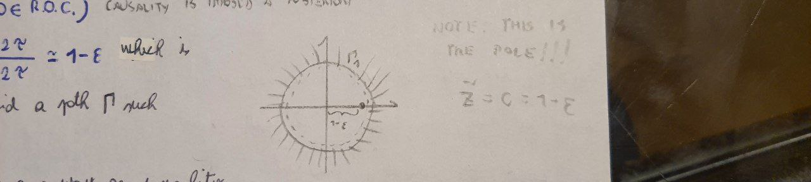

Lecture 08 - 18 October 2021¶
This lecture will be focusses on more examples and applications of the simulation theorem.
Low pass filter (again)¶
Properties:¶
Check reality: as easy as checking \(V^*(z^*)=V(z)\)
Check causality: \(\left( 0\not \in ROC; \infty\in ROC \right)\)
The pole is in \(\tilde{z}=c=\frac{1-T/2\tau}{1+T/2\tau}\simeq1-\epsilon\) which is inside \(\Gamma_1\) and one can always find a path \(\Gamma\) such that \(\tilde{z}\ um\ \Gamma \subset \Gamma_1\). Bibo stability: checked in the same way as causality
Behaviour at \(\omega=\pm \frac{\pi}{T}\): fine due to backwrds interpretation of the simulation theorem.
Bode diagram:
with \(\omega\) in the Nyquist band \(\left[ -\frac{\pi}{T};\frac{\pi}{T} \right]\). By further assuming \(\omega<<\frac{1}{T}\) it is possible to write:
Difference equation
The difference equation \(y[n]=y[n-1](1-2^{-k})+2^{-(k+1)}(x[n]+x[n-1])\) can be easily implemented on an FPGA by assuming \(1-c=\epsilon=2^{-k}\):
y[n]=y[n-1]-(y[n-1]>>k)+ (x[n]+x[n-1])>>(k+1)
Let’s suppose a \(50 Hz\) filter is needed. Instead of using the simulation theorem applied to a notch filter it is possible to obtainan an equivalent relation working by steps. First a zero at \(50 Hz\) is needed. But a single zero is not sufficient because reality requires \(V^*(z^*)=V(z)\). Then at least two more poles are necessaries to assure convergence but a pole at precisely \(50 Hz\) violates causality as it lies on \(\Gamma_1\). The solution to this problem is to consider an arbitrarly close point in the following way:
where:
\(\textcolor[rgb]{1.00,0.00,0.00}{(z-z_0)}\) suppress the unwanted frequency
\(\textcolor[rgb]{0.00,0.00,0.00}{(z-z_0)^*}\) forces reality \(V^*(z^*)=V(z)\)
\(\textcolor[rgb]{0.00,0.00,1.00}{(z-cz_0)(z-cz_0^*)}\) imposes causality \(40\not \in ROC; \infty\subset ROC\). \(c\) makes the width of the filter as small as possible. \(ROC: \left\{z: \left|z\right|>c \right\}\).
!()[images/21-10-18_Notch_Filter.jpeg]
e.g. Filter at \(f_0\frac{1}{4T}\rightarrow z_0 = \pm i\)¶
Let’s plot the results:
import matplotlib.pyplot as plt
import numpy as np
##############
# PARAMETERS #
##############
T=1#/1024 # Sampling time
f3dB = 1/(4*T) # Hz
omega = np.linspace(start=0, stop=np.pi/T, \
num=1000, endpoint=True)
def notch(omega, epsilon):
c = 1-epsilon
num = 2/(1+c**2)*np.abs(np.cos(omega*T))
den = (np.sqrt(1-np.power(2*c/(1+c**2)*np.sin(omega*T),2) ))
return num/den
#########
# PLOTS #
#########
fig, ax = plt.subplots(1, 1, figsize=(15, 7))
for epsilon in [1, 0.5, 0.1, 0.01]:
V = notch(omega, epsilon); #V = 20*np.log10(V);
ax.plot(omega, V, label=r"$\epsilon$={:}".format(epsilon))
ax.axhline(y=0, xmin=0, xmax=1)
ax.grid()
ax.legend()
fig.tight_layout()
plt.show()